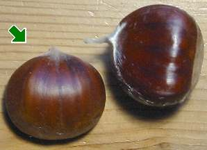
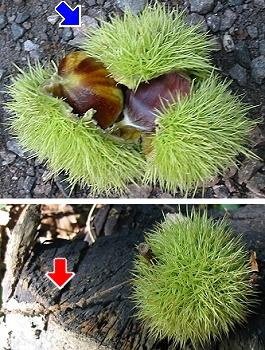

|
| Die Früchte werden im Oktober reif. Sie heißen Kastanien oder Maronen.
1 bis 3 Nussfrüchte sitzen zusammen in einem stachligen Fruchtbecher. Wir nennen ihn Igel.
Die rotbraunen, glänzenden Kastanien haben eine lederartige Schale.
Der helle Samen im Innern ist essbar.
 |  Oft hängt noch der männliche Blütenstand am Igel. |